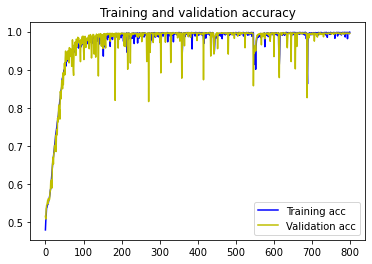

Supervised Learning: Case of Multi-classification
From Kaggle Competition hosted by Korean Government ...
Problem Statement:
import numpy as np
import os
import pandas as pd
import matplotlib.pyplot as plt
import warnings
warnings.filterwarnings('ignore')
%matplotlib inline
train = pd.read_csv('../input/jica/train.csv')
test = pd.read_csv('../input/jica/test.csv')
train.head()
Id S1 C1 S2 C2 S3 C3 S4 C4 S5 C5 CLASS
0 245765 2 10 1 4 3 10 1 10 2 11 3
1 235274 4 7 4 4 3 10 1 1 2 3 0
2 795377 2 13 4 7 1 10 1 13 3 4 1
3 811537 2 11 3 11 1 1 2 6 3 10 1
4 422395 3 7 1 9 1 3 3 3 2 9 2
test.head()
Id S1 C1 S2 C2 S3 C3 S4 C4 S5 C5 CLASS
0 660391 2 6 1 7 1 12 1 2 4 3 0
1 288151 2 10 4 9 4 6 3 3 1 2 0
2 789445 4 6 3 6 4 12 3 12 1 4 2
3 946741 2 5 4 2 1 10 3 1 1 2 1
4 561612 3 8 3 9 1 11 3 3 3 12 0
from sklearn import preprocessing, model_selection
from keras.utils.np_utils import to_categorical
features=['Id', 'S1', 'C1', 'S2', 'C2', 'S3', 'C3', 'S4', 'C4', 'S5', 'C5', 'PokerHand']
train.columns= features
test.columns= features
#Train Data
X_train = train.drop('PokerHand', axis=1)
X_train = X_train.drop('Id', axis=1)
y_train = train.iloc[:, 11]
Y_train = to_categorical(y_train) # one-hot encoding,
#Test Data
X_test = test.iloc[:, 1:11]
y_test = test.iloc[:, 11]
Y_test = to_categorical(y_test)
X_test = np.float32(X_test)
X_train = np.float32(X_train)
print(X_train.shape)
print(Y_train.shape)
print(X_test.shape)
print(Y_test.shape)
print(Y_train[0])
(25010, 10)
(25010, 10)
(1000000, 10)
(1000000, 10)
[0. 0. 0. 1. 0. 0. 0. 0. 0. 0.]
#Model Sequential
import keras
from keras.models import Sequential
from keras.layers.core import Dense, Dropout
model = Sequential()
model.add(Dense(128, activation='relu', input_dim=10))
model.add(Dense(64, activation='relu'))
model.add(Dense(32, activation='relu'))
model.add(Dense(16, activation='relu'))
model.add(Dropout(0.2))
model.add(Dense(10, activation='softmax'))
#Model Compile
from keras.optimizers import Adam
model.compile(loss='categorical_crossentropy', optimizer = Adam(lr=0.001), metrics=['accuracy'])
#Model Fit
history = model.fit(X_train, Y_train, epochs=800, batch_size= 32, validation_split= 0.2, shuffle=True)
Epoch 1/800
626/626 [==============================] - 1s 2ms/step - loss: 1.1069 - accuracy: 0.4798 - val_loss: 0.9666 - val_accuracy: 0.5156
Epoch 2/800
626/626 [==============================] - 1s 2ms/step - loss: 1.0007 - accuracy: 0.5034 - val_loss: 0.9622 - val_accuracy: 0.5084
Epoch 3/800
626/626 [==============================] - 1s 2ms/step - loss: 0.9825 - accuracy: 0.5180 - val_loss: 0.9565 - val_accuracy: 0.5318
Epoch 4/800
626/626 [==============================] - 1s 2ms/step - loss: 0.9746 - accuracy: 0.5370 - val_loss: 0.9531 - val_accuracy: 0.5436
Epoch 5/800
626/626 [==============================] - 1s 2ms/step - loss: 0.9682 - accuracy: 0.5389 - val_loss: 0.9505 - val_accuracy: 0.5454
Epoch 6/800
626/626 [==============================] - 1s 2ms/step - loss: 0.9601 - accuracy: 0.5449 - val_loss: 0.9459 - val_accuracy: 0.5522
Epoch 7/800
626/626 [==============================] - 1s 2ms/step - loss: 0.9563 - accuracy: 0.5458 - val_loss: 0.9408 - val_accuracy: 0.5576
...
Epoch 796/800
626/626 [==============================] - 1s 2ms/step - loss: 0.0124 - accuracy: 0.9972 - val_loss: 0.0460 - val_accuracy: 0.9956
Epoch 797/800
626/626 [==============================] - 1s 2ms/step - loss: 0.0122 - accuracy: 0.9974 - val_loss: 0.0522 - val_accuracy: 0.9960
Epoch 798/800
626/626 [==============================] - 1s 2ms/step - loss: 0.0097 - accuracy: 0.9983 - val_loss: 0.0512 - val_accuracy: 0.9958
Epoch 799/800
626/626 [==============================] - 1s 2ms/step - loss: 0.0247 - accuracy: 0.9947 - val_loss: 0.0453 - val_accuracy: 0.9948
Epoch 800/800
626/626 [==============================] - 1s 2ms/step - loss: 0.0098 - accuracy: 0.9982 - val_loss: 0.0464 - val_accuracy: 0.9952
acc = history.history['accuracy']
val_acc = history.history['val_accuracy']
loss = history.history['loss']
val_loss = history.history['val_loss']
epochs = range(len(acc))
plt.plot(epochs, acc, 'b', label='Training acc')
plt.plot(epochs, val_acc, 'y', label='Validation acc')
plt.title('Training and validation accuracy')
plt.legend()
plt.show()

#Test
print(model.evaluate(X_test, Y_test))
31250/31250 [==============================] - 48s 2ms/step - loss: 0.0344 - accuracy: 0.9965
[0.03440459445118904, 0.9965479969978333]
# uploaded2 = files.upload()
# submission = pd.read_csv(io.BytesIO(uploaded2['sample_submission.csv']))
submission = pd.read_csv('../input/jica/sample_submission.csv')
#to_csv
submission['CLASS'] = predict
submission['CLASS'].value_counts()
0 502803
1 422497
2 47614
3 21191
4 4170
6 1271
7 240
5 204
9 10
Name: CLASS, dtype: int64